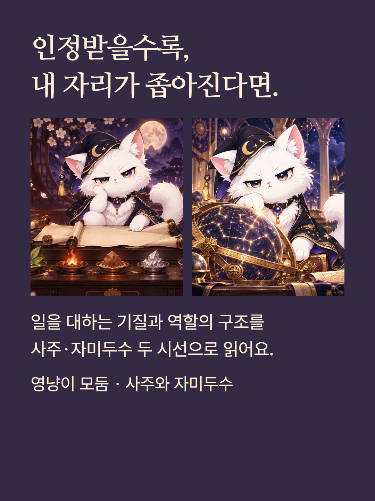
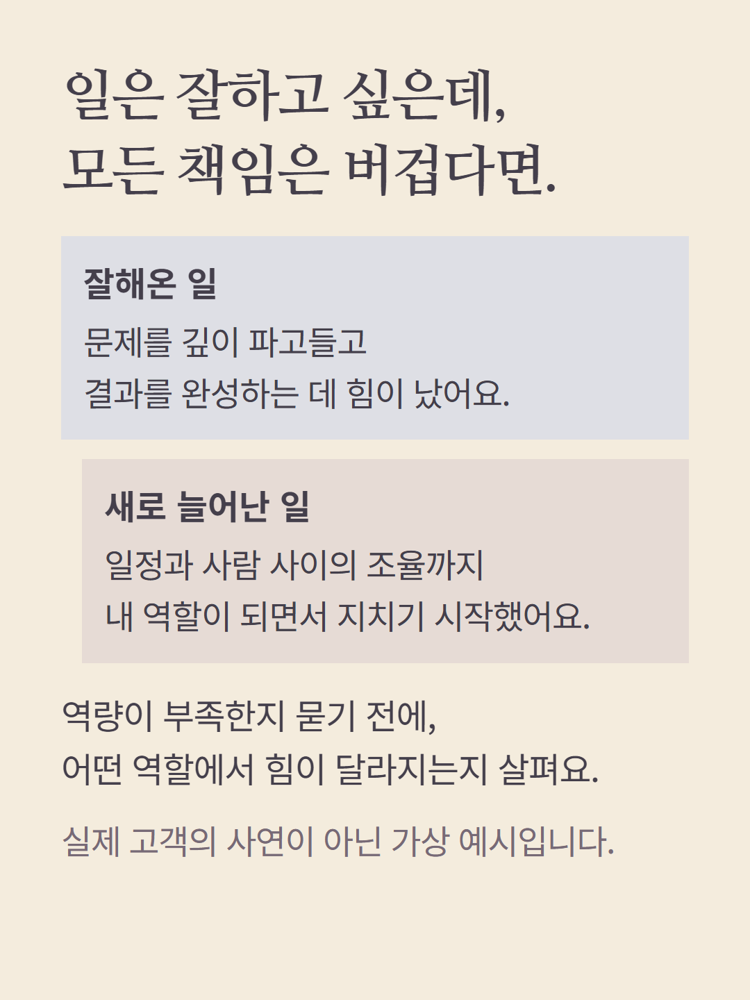
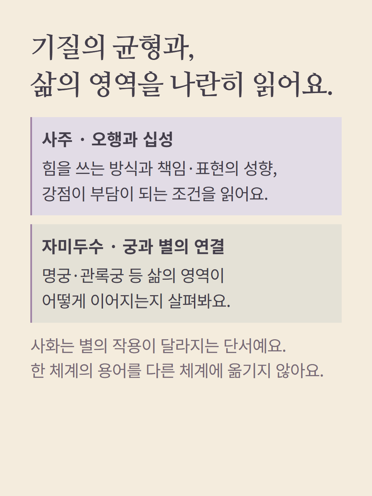
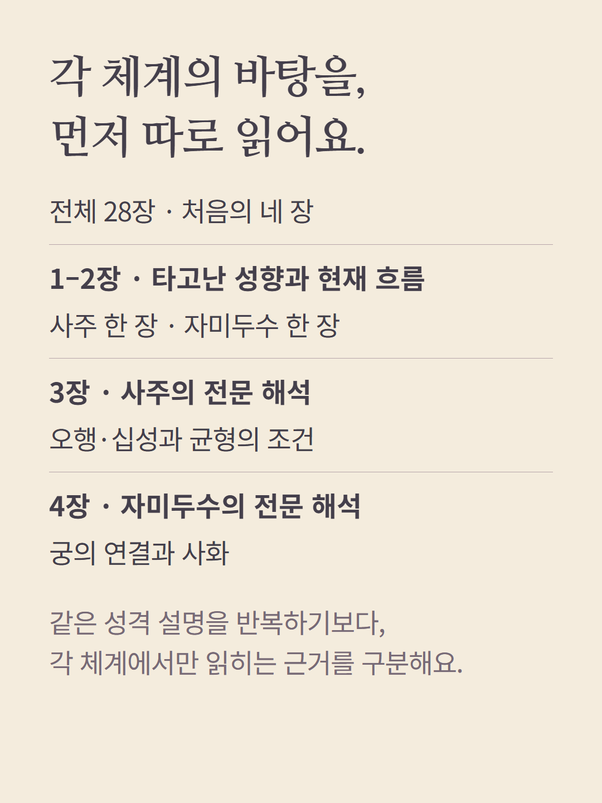
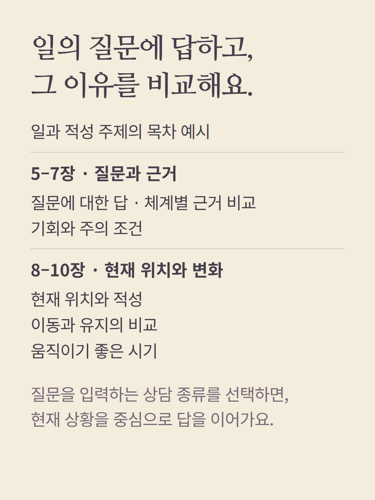
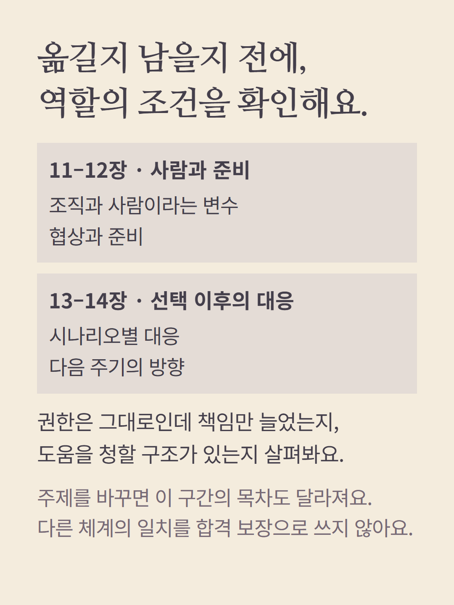
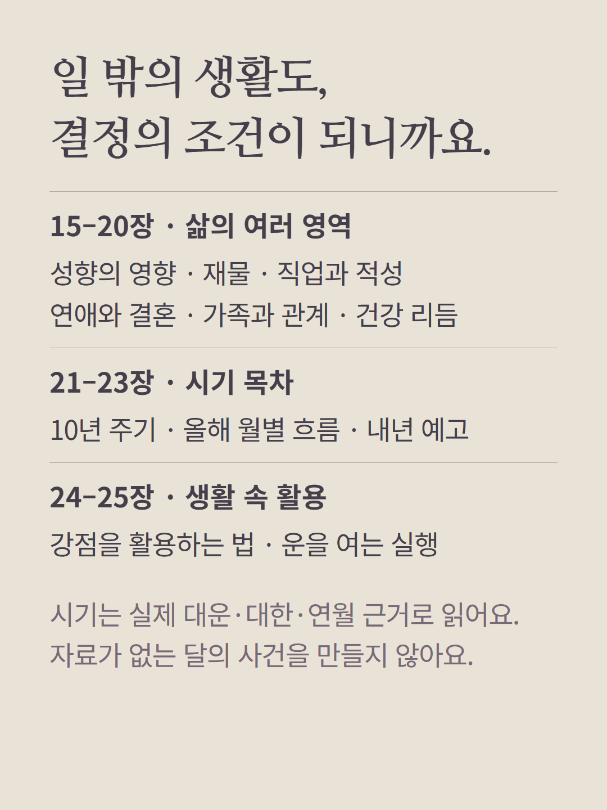
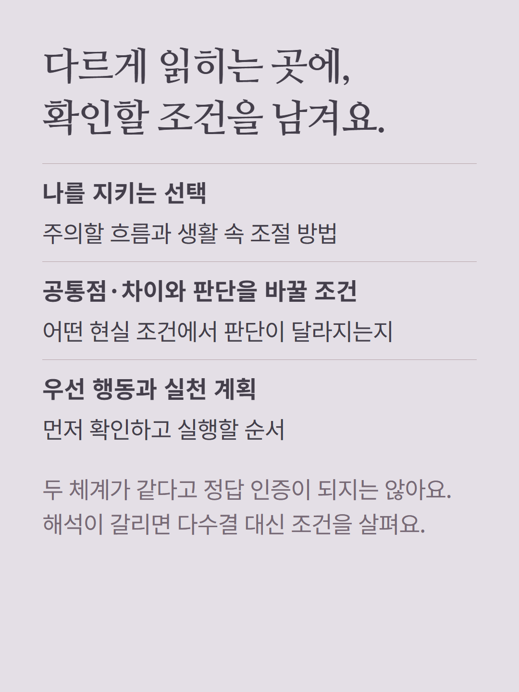
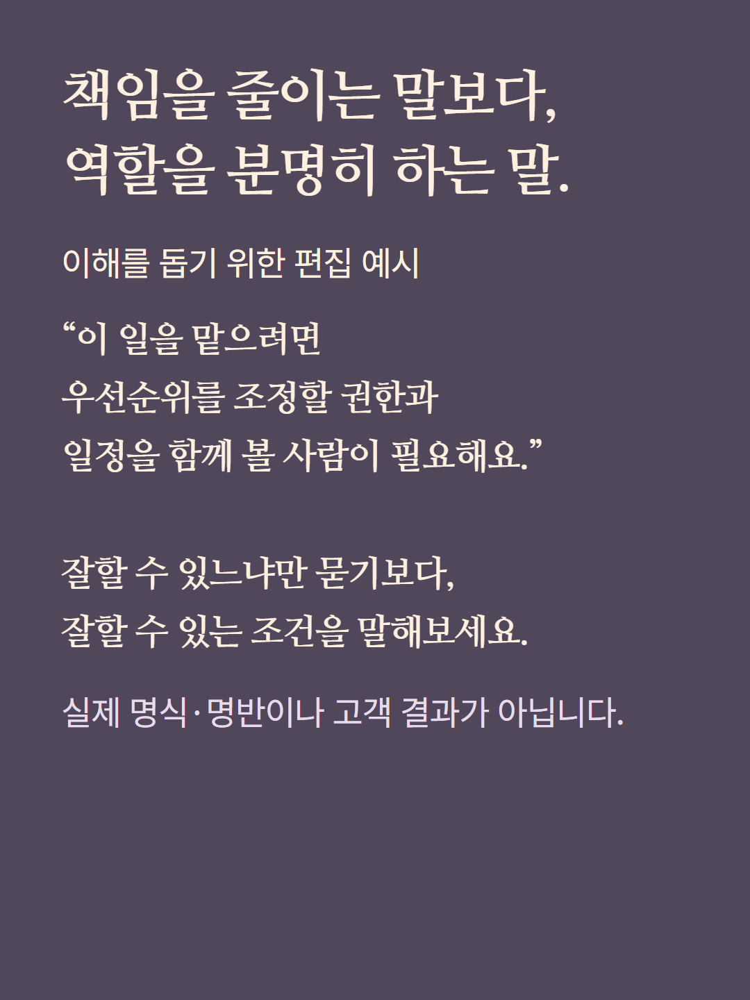
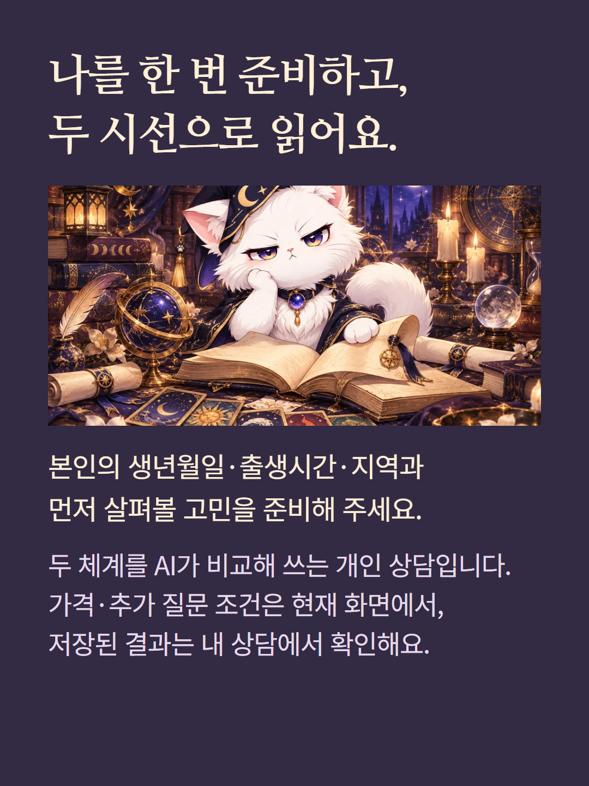

사주와 자미두수 두 체계를 함께 읽는 모둠 상담입니다. 본인 출생 정보로 두 체계의 성향·전문 해석, 선택한 주제의 답과 비교, 인생 영역, 주의점과 실천을 총 28장으로 읽습니다. 이 안내의 일과 적성 목차는 해당 주제 예시이며 선택 주제에 따라 중간 목차가 달라집니다. 두 사람의 궁합 상품이 아니며 두 체계의 일치를 정확도나 성공 확률로 바꾸지 않습니다. 대운·대한과 연·월 근거는 각각 실제 계산 범위에서만 해석하며 날짜별 사건을 보장하지 않습니다. 출생시간·지역을 포함한 본인 프로필이 필요합니다. 예시는 가상 편집이며 AI 작성 상담입니다. 가격·추가 질문 조건은 기존 화면을 따릅니다.